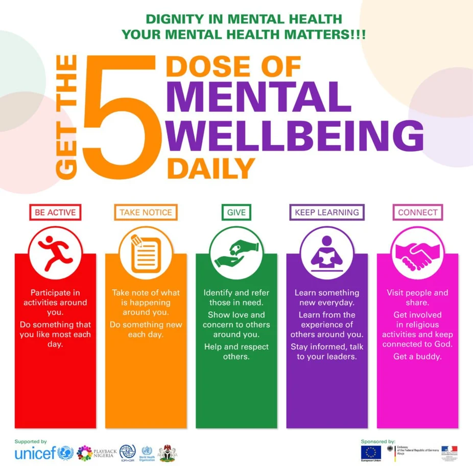
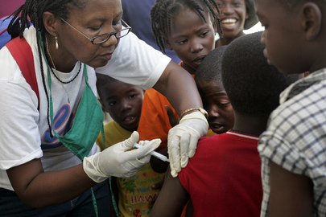

Introduction
Welcome to the about us page! In this section, we will introduce what our topic, good health and wellbeing, is and give good detail and hope you guys get a good insight on what it is.

What is Good Health and Wellbeing?
A person may enjoy a happy and fruitful life when they are in a condition of physical, mental, and social wellness, which is referred to as good health and wellbeing. It encompasses a range of elements that contribute to general wellbeing and extends beyond the absence of illness and disease. Here are a few examples: Physical Health, Mental Health, Healthy Eating, Learning Wellbeing and much more
What is Goal 3 of Good Health and Wellbeing?
The health of the populace has improved significantly in recent years. Out of 200 nations or regions, 146 have already attained or are on course to achieve the SDG objective for under-5 mortality. Since 2010, the number of fatalities from AIDS-related causes has decreased by 52% worldwide because to effective HIV therapy, and 47 nations have eradicated at least one neglected tropical illness. Nonetheless, disparities in access to healthcare continue to exist. The COVID-19 epidemic and other lingering issues have made it more difficult to achieve Goal 3. The number of children immunised has decreased more than at any other time in the past three decades, and mortality from malaria and TB have risen relative to pre-pandemic levels.

Future Goals Good Health and Wellbeing
The ambitious pledge to eradicate the AIDS, TB, malaria, and other infectious disease epidemics by 2030 is made by the Sustainable Development Goals. The goal is to attain universal health care and give everyone access to reasonably priced, safe medications and immunisations. More funding for health systems is required to address long-standing issues in healthcare and help nations recover from past tragedies while strengthening their defences against potential health hazards.
